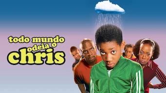
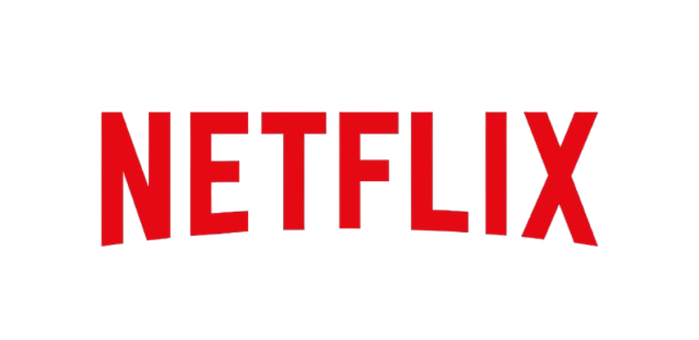
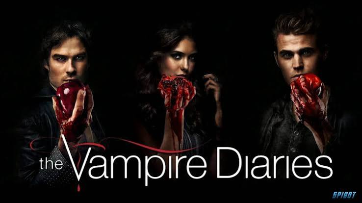
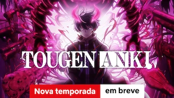
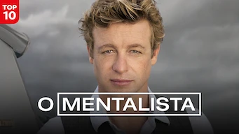
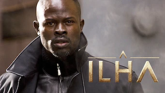
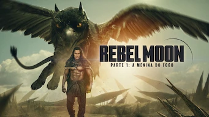
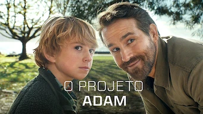

The Vampire Diaries acompanha Elena Gilbert, uma adolescente que se envolve com os irmãos vampiros Stefan e Damon Salvatore. Enquanto tentam proteger Elena, os irmãos enfrentam diversos perigos e acontecimentos sobrenaturais na cidade de Mystic Falls.
Diretor Kevin Williamson e Julie Plec
Elenco Nina Dobrev, Paul Wesley, Ian Somerhalder, Candice King, Katerina Graham, Steven R. McQueen, Michael Trevino, Zach Roerig, Matt Davis, Joseph Morgan
Gênero Drama, Fantasia, Romance
Classificação 14 anos
Ano de Lançamento 2009
Duração Aproximadamente 43 minutos por episódio





